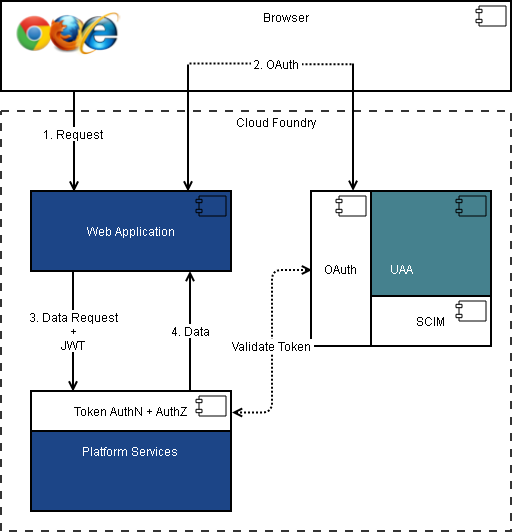

© 2015-2017 General Electric Company. All rights reserved.
© 2015-2017 General Electric Company. All rights reserved.The Predix platform offers microservices through the Predix Catalog. The microservices are provisioned in the Cloud Foundry marketplace. You can select the microservices to use depending on your application requirements. For a complete list of microservices offered on the Predix platform, see the Catalog page on Predix.io.
Predix platform services use OAuth2 for authentication. The services leverage the User Account and Authentication (UAA) web service to manage OAuth2 clients.
User Account and Authentication (UAA) is a web service provided by Cloud Foundry to manage users and OAuth2 clients. Its primary role is as an OAuth2 provider, issuing tokens for client applications to use when they act on behalf of Cloud Foundry users. In collaboration with the login server, it can authenticate users with their Cloud Foundry credentials, and can act as an SSO service using those credentials (or others). The service provides endpoints for managing user accounts and for registering OAuth2 clients.
To use the platform services, you must first set up an instance of the UAA service as your trusted issuer. All access to the services is then authenticated using the designated trusted issuer.
The following diagram shows how platform services are integrated with UAA for authentication.
